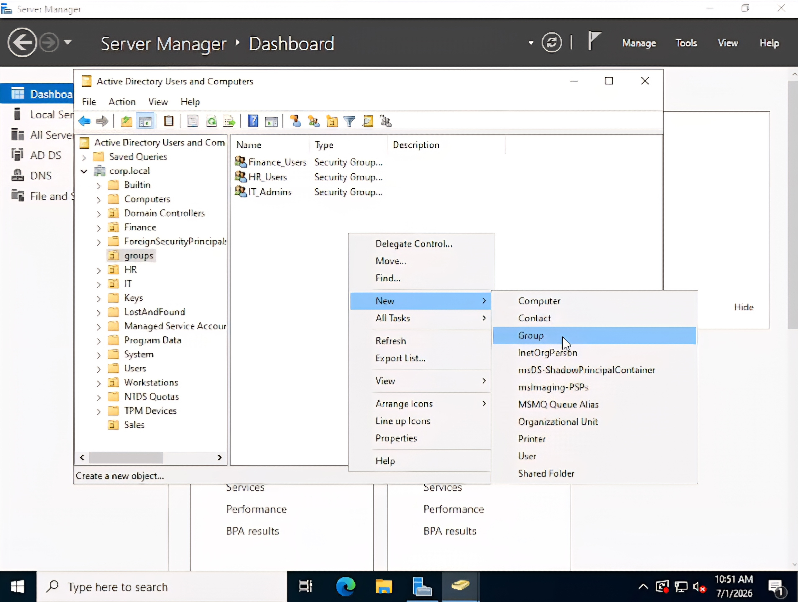
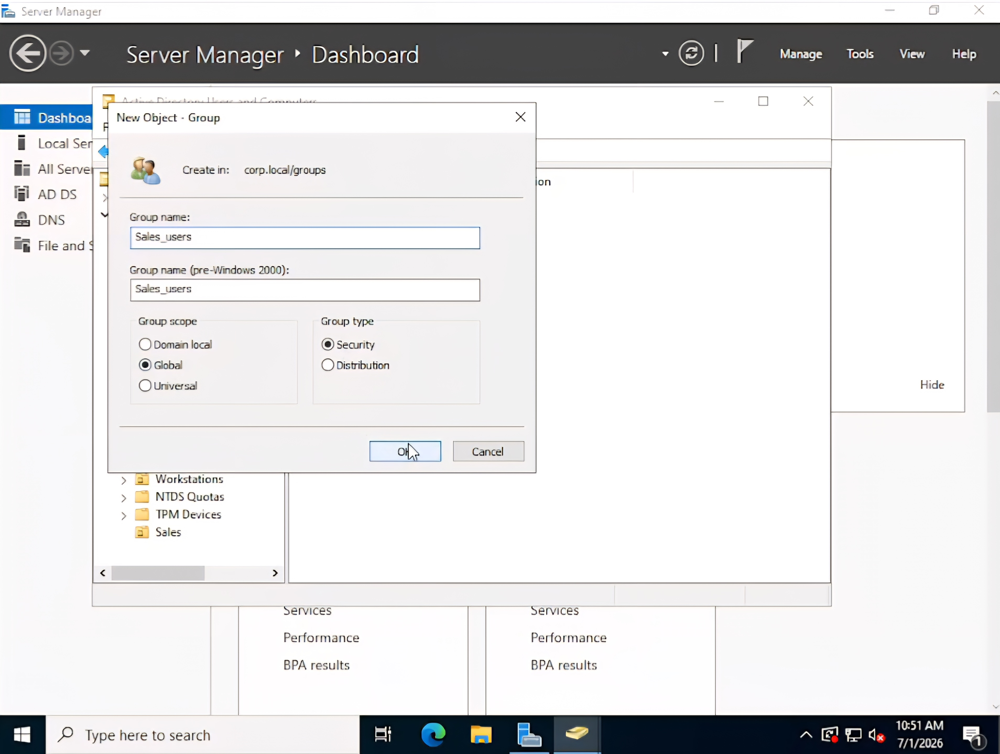
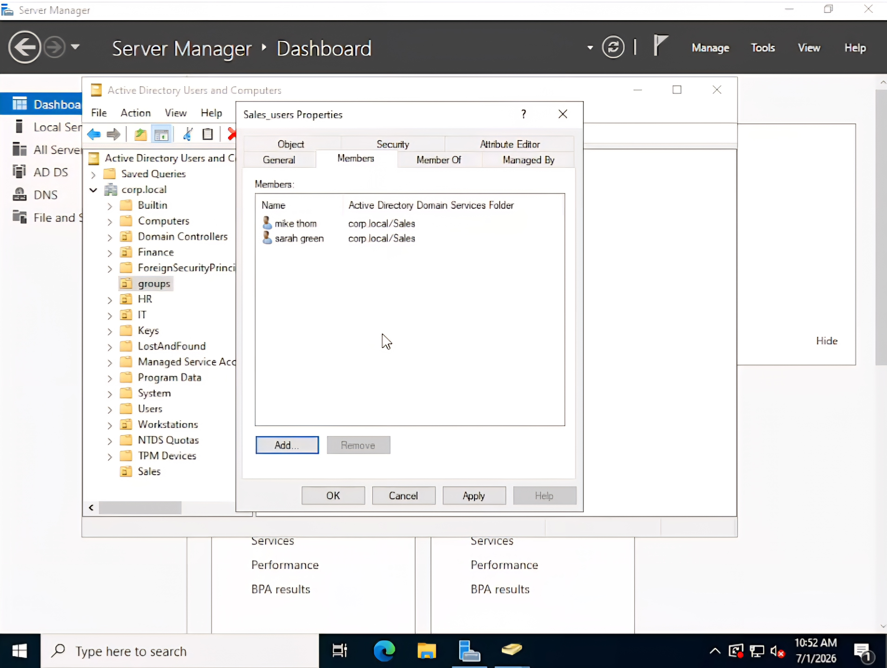
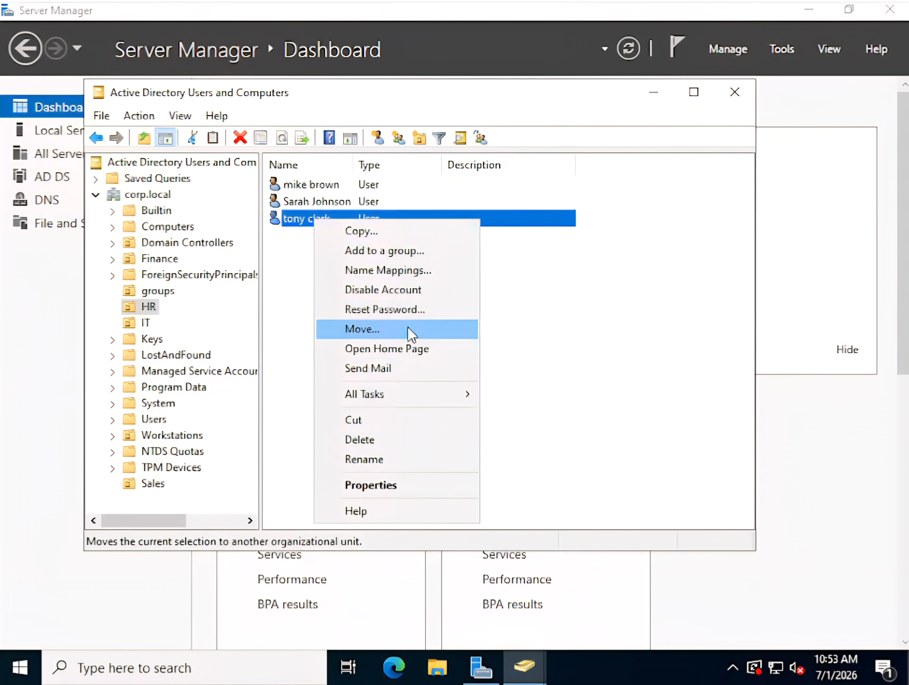
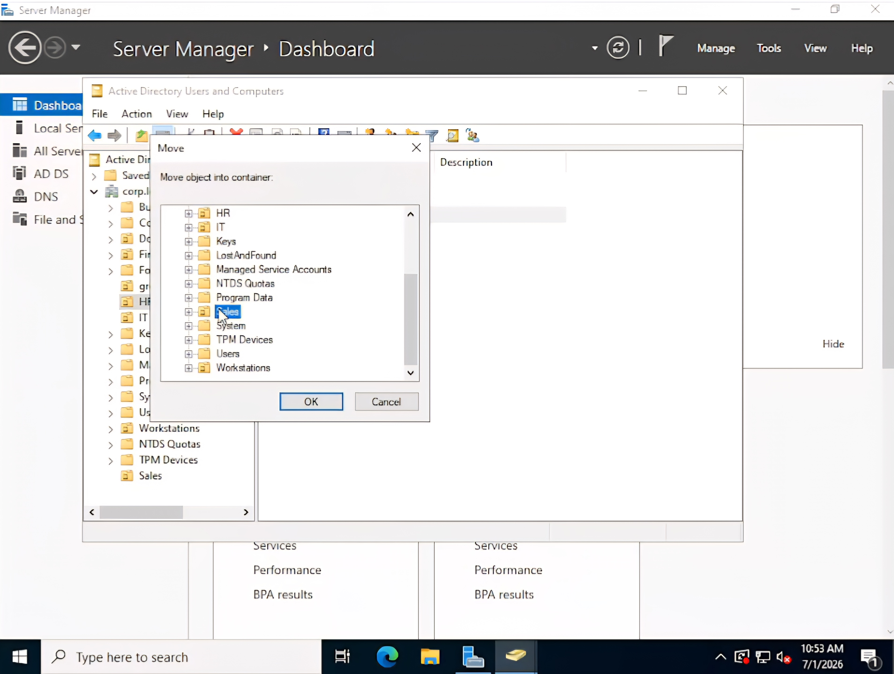
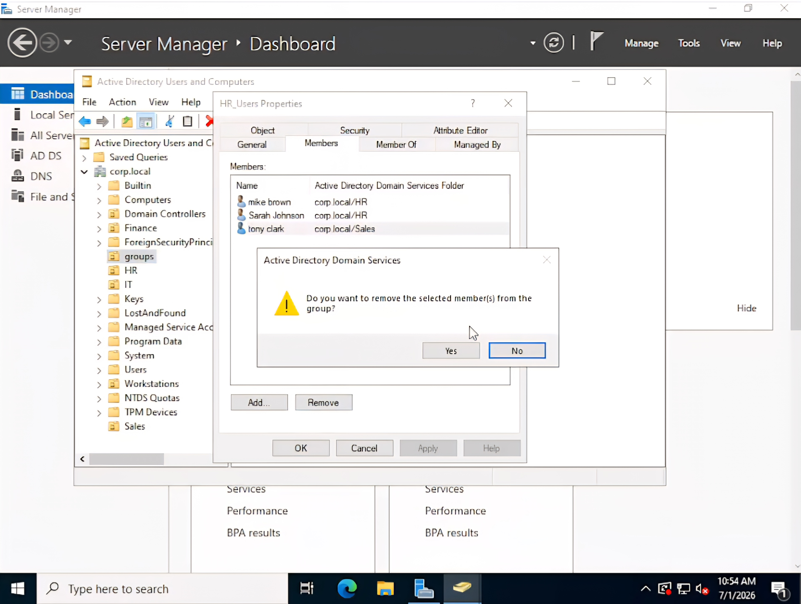
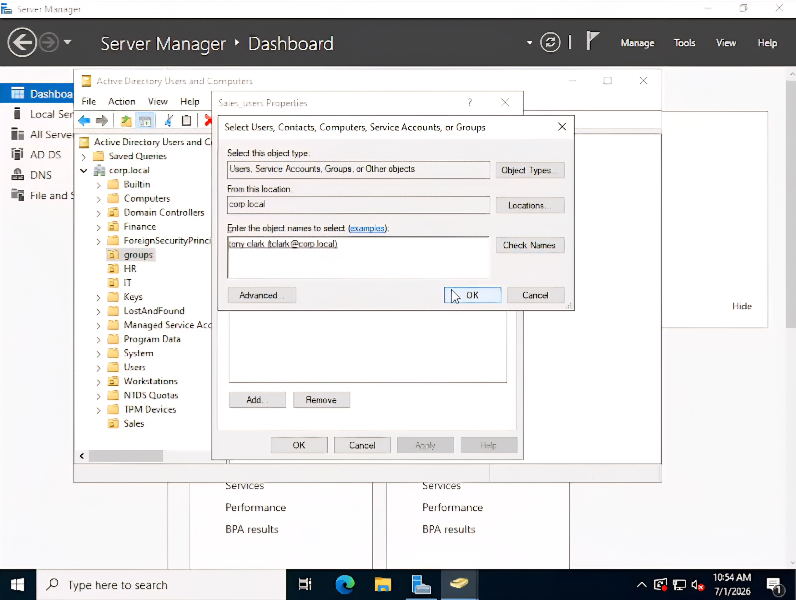
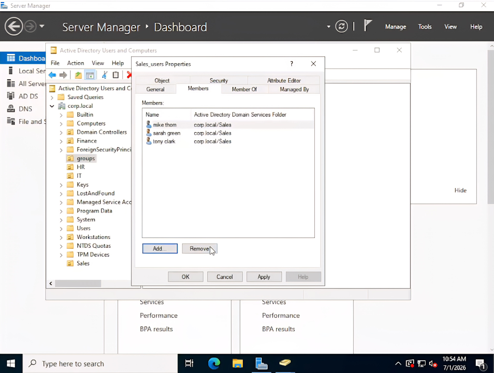

This lab demonstrates the administration of security groups within Active Directory Domain Services (AD DS). The exercise includes creating a departmental security group, assigning users to the group, moving an existing user to a different Organizational Unit (OU), updating group memberships, and verifying that access is managed according to departmental roles.
The following demonstration shows the complete process of creating a Security Group, adding users, moving a user between Organizational Units, updating group memberships, and verifying the final configuration.
A new Global Security Group named Sales_Users is created to manage permissions for users within the Sales department.

The group creation wizard is completed and the new Security Group is successfully created.

Sales department users are added to the Sales_Users Security Group, allowing permissions to be managed through group membership rather than individual user accounts.
The selected users are successfully added to the Security Group.

An existing user account is moved from the Human Resources Organizational Unit to the Sales Organizational Unit to reflect a departmental change.

The user is successfully moved into the Sales Organizational Unit.

Because the user has changed departments, the account is removed from the previous department's Security Group before being assigned to the appropriate Sales Security Group.

The user is then added to the Sales_Users Security Group.

The final Security Group membership is verified to confirm that all Sales users have been successfully assigned to the correct Security Group.

This lab demonstrates practical administration of Active Directory Security Groups by creating departmental groups, assigning users, managing Organizational Unit changes, and maintaining accurate group memberships. Managing permissions through Security Groups instead of assigning permissions directly to individual users is a widely adopted best practice in enterprise Windows environments because it simplifies administration and improves scalability.